Our current government partnership, and the field research on local governance, JEEViKA, and citizen-centric data systems it draws on.
JEEViKA, Bihar's flagship government programme for self-help groups and rural livelihoods, spans 1.4 crore households across the state. GRAMA is partnering with JEEViKA to strengthen its data systems and accountability frameworks as part of a long-term organisational transformation.
Through this collaboration, JEEViKA is evolving into a more data-driven and responsive institution. GRAMA's work focuses on building tools and feedback systems that capture real-time insights from the field, streamline information flows across levels, and enhance the use of data for decision-making.
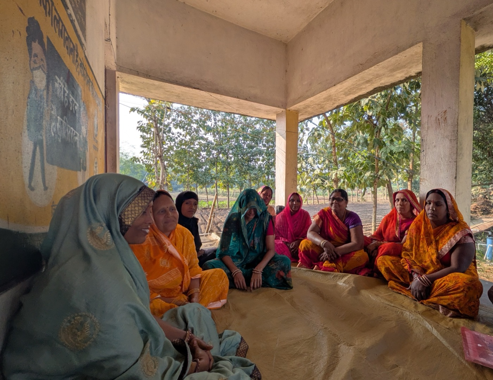
SHG meeting in Bhojpur
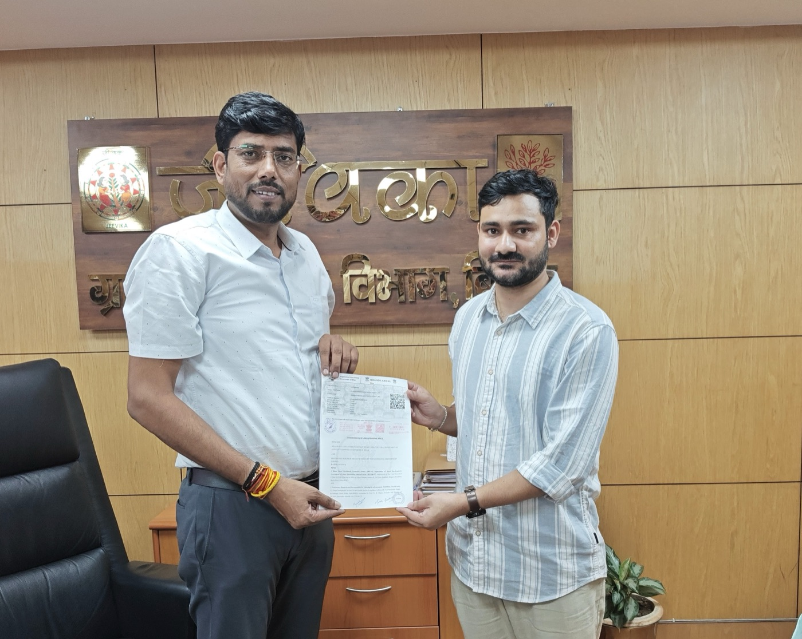
MoU signing with JEEViKA, October 2025
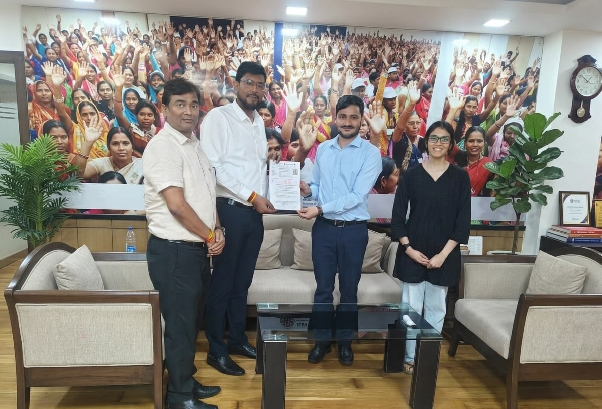
MoU signing with JEEViKA, May 2026
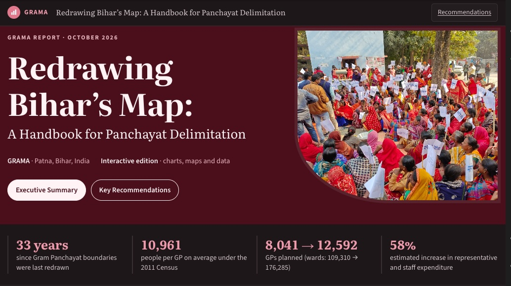
A handbook guiding how Gram Panchayats in Bihar should be redrawn and delimited, grounded in GRAMA's research.
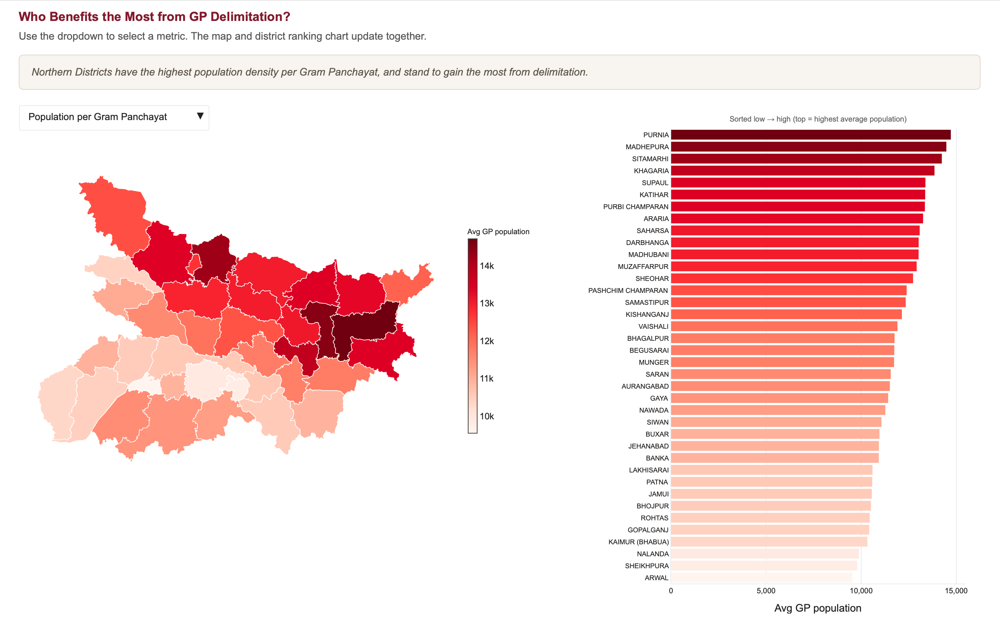
An interactive dashboard exploring who benefits most from Gram Panchayat delimitation across Bihar.
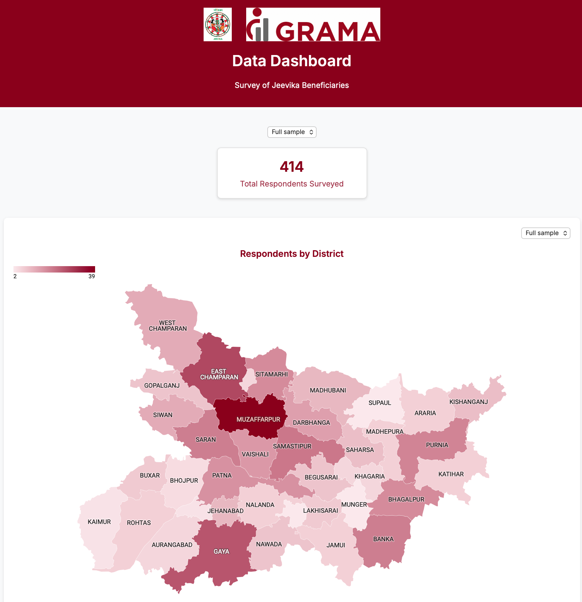
An interactive dashboard presenting insights from GRAMA's survey of JEEViKA self-help group members across Bihar, covering demographics, savings, and lending patterns.
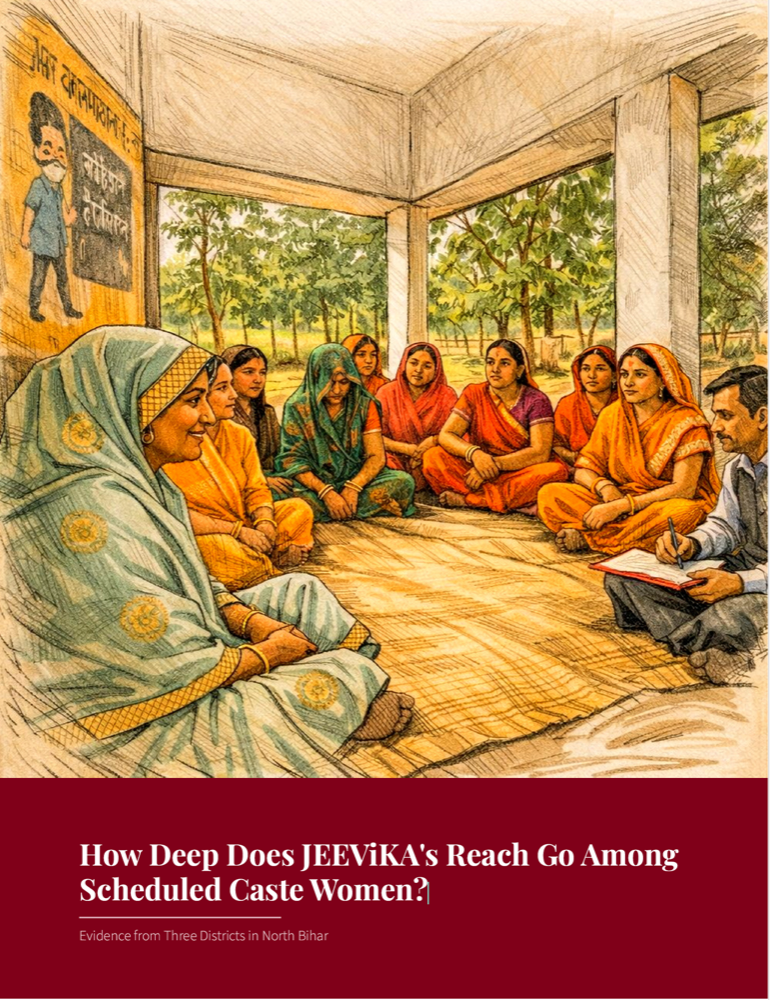
How deeply does JEEViKA reach Scheduled Caste women? GRAMA examines membership patterns and outcomes using survey data from over 2,300 SC women across three Bihar districts.
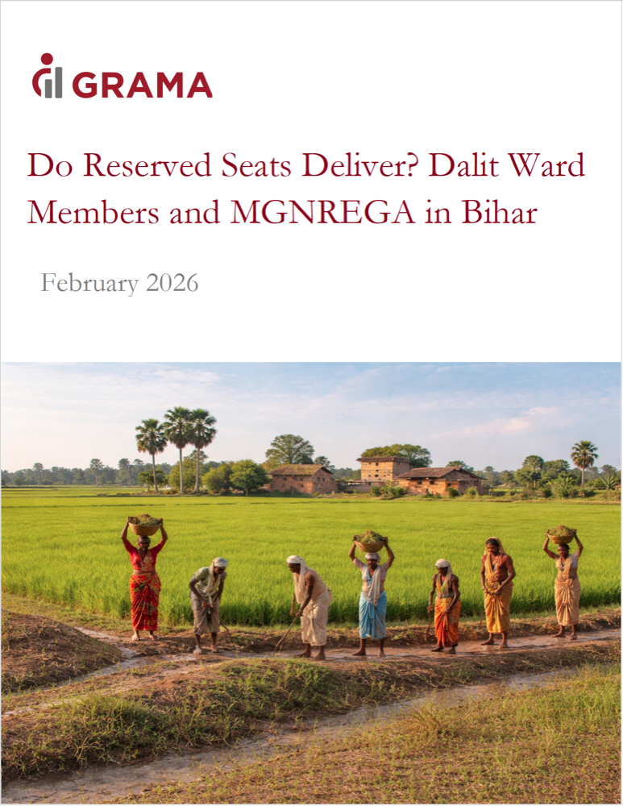
Do reserved seats deliver? GRAMA's causal analysis examines the impact of Dalit Ward Members on MGNREGA service delivery in Bihar.
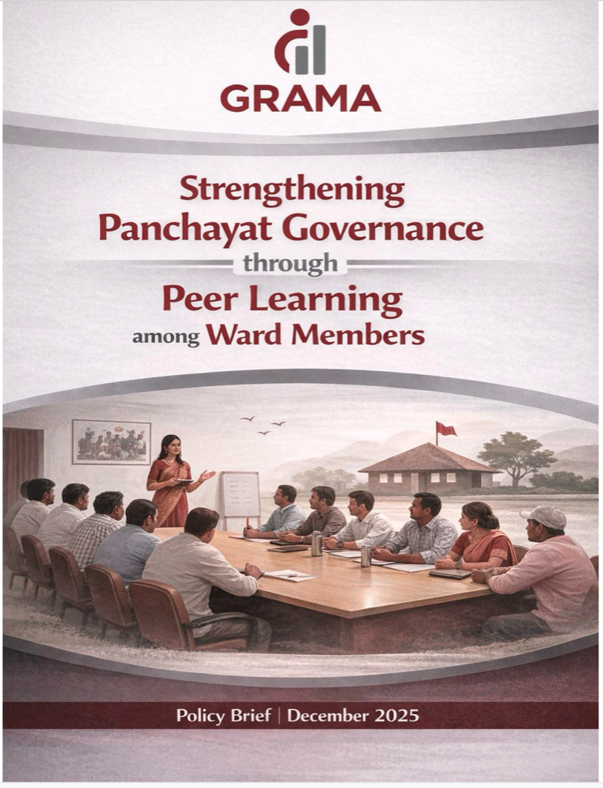
A peer-learning programme across 10 Bihar districts brought first-time Ward Members together to discuss real governance challenges, strengthening Panchayati Raj administration.
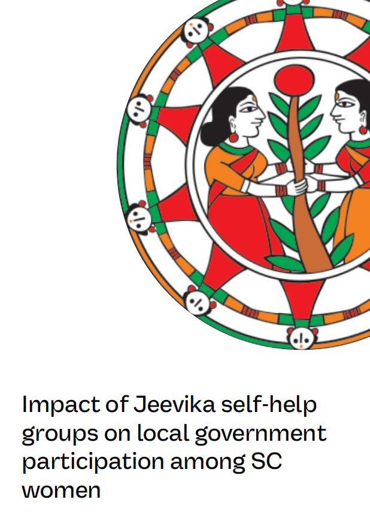
A study by Sen and Sharan (2024) finds that JEEViKA self-help groups raise SC women's contests for local office by 148%, but only in panchayats with SC-reserved seats.
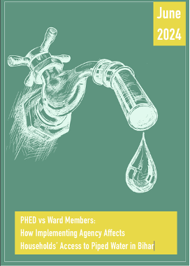
Bihar decentralised its Har Ghar Nal ka Jal project to ward members, then recentralised it to PHED in 2023. GRAMA's research compares household access to piped water under each implementing agency.
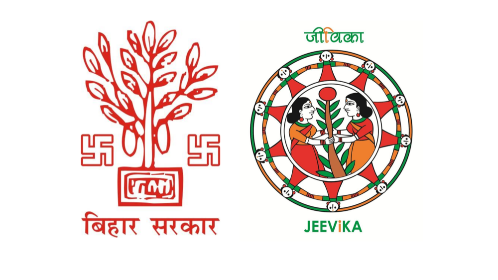
GRAMA partners with JEEViKA, Bihar's flagship self-help group programme spanning 1.4 crore households, to strengthen its data systems and accountability frameworks.